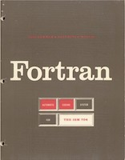
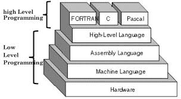
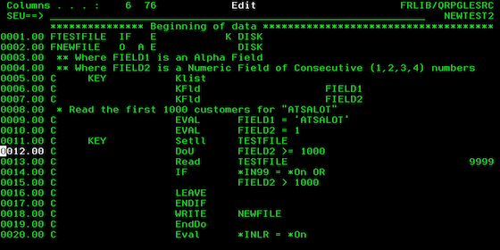

FORTRAN
 - Derived from "Formula Translation"
- Developed for scientific and engineering applications
- Developed by John W. Backus and IBM for IBM's 704 mainframe computer in late 1953
- A language that facilitated mathematical applications
- Considered to be the first widely used programming language supported across a variety of computer architectures
- First high-quality optimizing compiler
- Fortran came to dominate the scientific and engineering area of programming early on and has been in continuous use for over half a century
- Is the primary language for some of the most intensive supercomputing tasks today, such as astronomy, weather and climatIe modeling, numerical linear algebra (LAPACK), numerical libraries (IMSL and NAG), structural engineering, hydrological modeling, optimization, satellite simulation and data analysis, computational fluid dynamics, computational chemistry, computational economics and computational physics.
Must see movie featuring "FORTRAN"

RPG / RPG400
- A high-level programming language (HLL) for business applications.
- Developed by IBM in 1959 as the Report Program Generator
- A tool to replicate punched card processing on the IBM 1401
- A fixed-format programming language, which means that code must be placed in exact column locations in order to generate correct results
- Incorporates fixed logic, which means that files are opened when the program begins and closed when the program ends 
- RPG/400 was effectively RPG III running on AS/400. IBM renamed the RPG compiler as "RPG/400"
- AS400 is best suited for mid-level industry and is used in pharmaceutical industry, banking, etc...
- RPG has evolved over the years and the latest evolution launched in 2010 with the full name of Rational Open Access: RPG Edition.